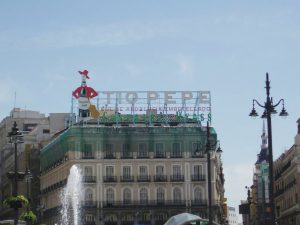
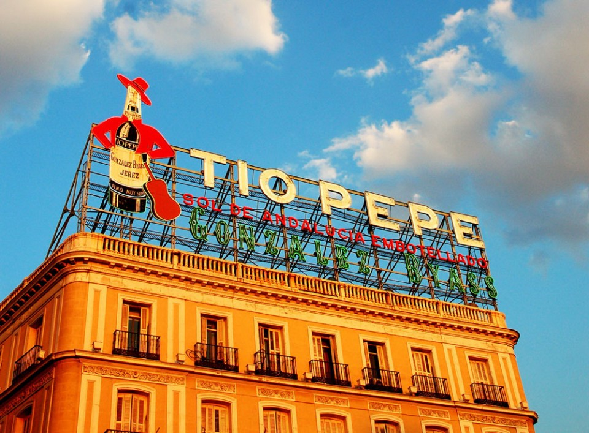

Tío PepeEste conocido cartel pertenece a una empresa de bebidas llamada González Byass, siendo Tío Pepe una de sus marcas más conocidas. El cartel fue erigido en 1936 en el antiguo hotel París.
Antiguamente este cartel no era el único, sino que había más anuncios en los tejados y fachadas de la Puerta del Sol.
 El cartel de Tío Pepe en su ubicación original
Esta situación se mantuvo así hasta que el resto de carteles publicitarios fueron retirados por el Ayuntamiento, excepto el de Tío Pepe, que fue indultado.
En 2006, el hotel París quebró y el edificio fue comprado por Apple para hacer una Apple Store, y el cartel fue retirado en 2011. Por suerte, el cartel encontró un nuevo sitio en 2014, siendo desde entonces que el cartel se puede admirar en su ubicación actual.
 El cartel en el día de hoy
Hay quien piensa que este es el único cartel publicitario "indultado" en Madrid, pero actualmente hay tres más, el de Schweppes en Gran Vía, el de BBVA en el Paseo de la Castellana y el de Rolex, también en Gran Vía.
Hubo un quinto cartel indultado, el de Firestone en O'Donnell, pero fue retirado en 2014.